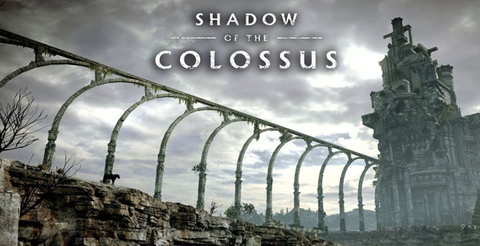
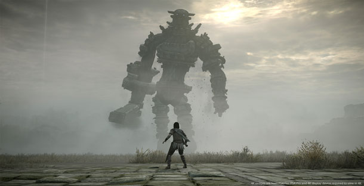

Na conferência da Sony durante a Tokyo Game Show 2017, a empresa divulgou um novo trailer para o remake de Shadow of the Colossus. O vídeo dá destaque para os colossos, criaturas gigantes do game que os jogadores precisam derrotar.
Fumito Ueda, diretor do game original, declarou recentemente que enviou à Sony uma proposta com ideias de mudanças para a nova versão, mesmo ele não estando envolvido diretamente no projeto. Após a revelação na conferência do PlayStation na E3 2017, a empresa confirmou que Shadow of the Colossus para PS4 será mesmo um remake, com novos visuais e controles atualizados.
O game será, de fato, um remake com um visual completamente novo, confirmou a Sony.
Em entrevista à revista japonesa Famitsu, o presidente da Sony Worldwide Studios, Shuhei Yoshida, esclareceu que o jogo por vir não é somente um remaster. "É um remake", ele disse. "O conteúdo do jogo é o mesmo da versão original, mas todos os assets estão sendo refeitos.
No que se refere ao conteúdo, Yoshida disse que tudo do jogo original, para PS2, estará incluído, confirmando que "é o mesmo". Dito isso, os controles do game estão sendo atualizados para o PS4 para oferecer ao jogo uma sensação de modernidade. "As preferências dos jogadores para controles e afins mudam conforme o passar o tempo, então estamos trabalhando para implementar uma forma mais moderna de jogar", ele relatou.
A Bluepoint Games, estúdio por trás dos remasterizações HD de ICO e Shadow of the Colossus para PS3, está no comando do remake. Enquanto isso, de acordo com Yoshida, o criador do jogo, Fumito Ueda, "não estava muito envolvido dessa vez". O último título de Ueda, The Last Guardian, foi lançado em dezembro do ano passado.